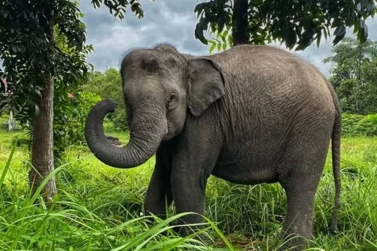
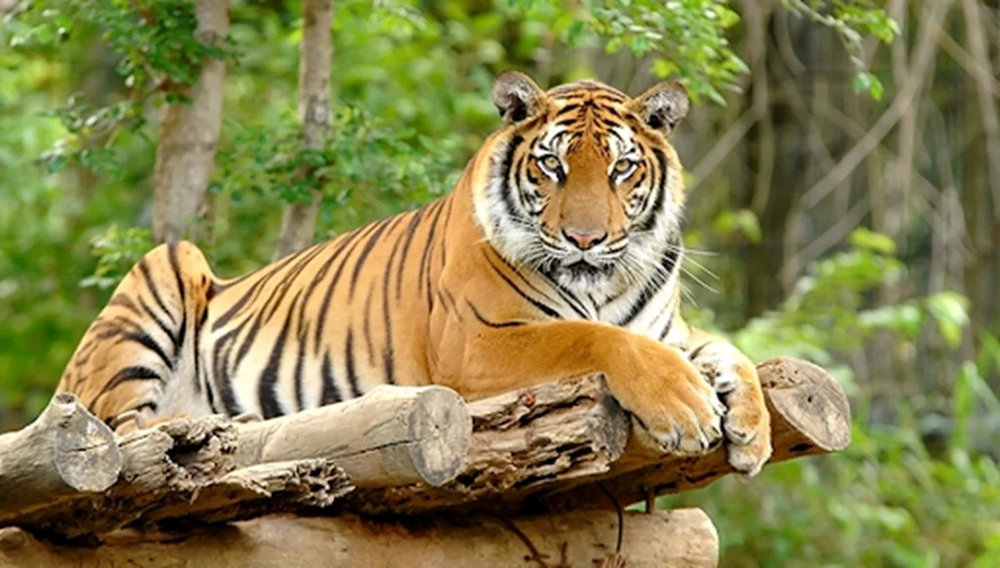
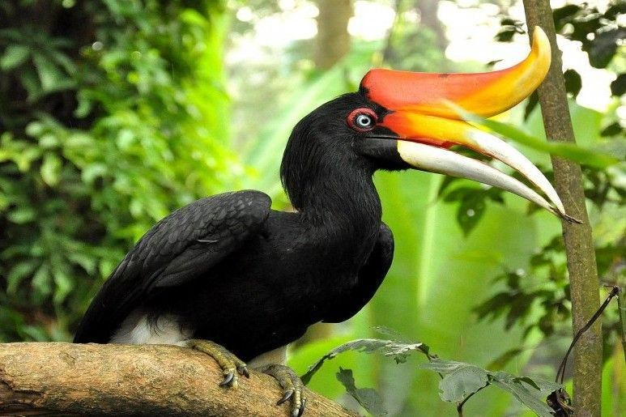
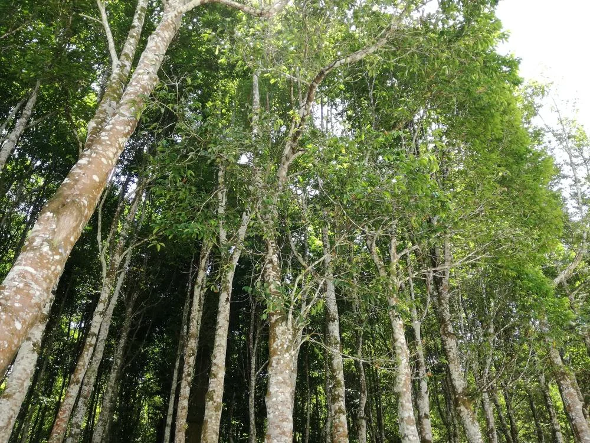

Keanekaragaman
Hayati
Flora & Fauna

Mamalia
Rumah bagi raksasa rimba. Temukan Gajah Sumatera, Harimau, dan Beruang Madu yang langka.
Eksplorasi

Avifauna
Surga bagi pengamat burung. Lebih dari 100 spesies burung eksotis menghiasi langit Tesso Nilo.
Eksplorasi

Tanaman
Kekayaan botani yang tak ternilai, dari pohon-pohon raksasa hingga tanaman obat langka.
Eksplorasi